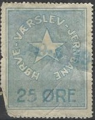
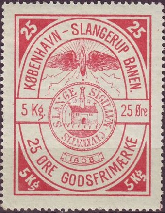
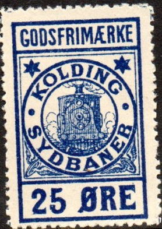

Smaller sized stamps: 75 o blue and black. Very similar stamps were issued for the Odsherreds Jernbane (next image).
Return To Catalogue - Denmark - Denmark Railway Stamps, overview
Note: on my website many of the
pictures can not be seen! They are of course present in the
catalogue;
contact me if you want to purchase it.

Smaller sized stamps: 75 o blue and black. Very similar stamps
were issued for the Odsherreds Jernbane (next image).
In this smaller design I have seen: 40 o red, 75 o blue and black, "70" on 60(?) o green and black, "1 kr." on 40 o red.

Inscription 'H.V.J. EFTERKRAV. KR. ........."


1870 issue 8 Sk green and 12 Sk red. Trains in each corner.
Apperently a control stamp was needed before they could be used
(I have never seen this control stamp).


Reprints, the design is less clear than in the originals. I've
seen these reprints without the fancy monogram overprint

1867 Design as the Danske Statsbaner, inscrption "De
jydsk-fyenske Jernbaner FOR PAKKER INDTIL 10 PUNDS VAEGT"
(parcels under 10 pounds); 8 sk red. A very similar stamp exist
but with inscription 8 PUNDS (also 8 sk red).

10 o red


Image of train, I've seen with violet overprint 25 o red and
black, "35" on 15 o green and black, "30
Øre" on 10 c green and black, "30 Øre" on 15 c
green and black, "75 Øre" on 15 c green and black,
"90 Øre" on 25 c red and black,

Here with violet "25" overprint


I've also seen 5 Kr red and "2" on 5 Kr red.

In pictorial designs I have seen 25 o (Møns Klint Sommerspiret, "GODSFRIMAERKE"), 30 o (Stege city entrance tower, "GODSFRIMAERKE"), 50 o (Vordingborg Slotstation, "GODSFRIMAERKE"), 60 o modern train ("GODSFRIMAERKE"), 75 o (Dr.Alexandrines Bro), "70 Øre" (violet) on 25 o, "60" on 75 o, "125" on "60" on 75 o.


25 o red (5 Kg), next to with the 'kilo' indications erased with
a pen. Also 50 o blue (5 Kg).


"GODSFRIMAERKE": 25 o red, 30 o black and 50 o blue.


Inscription "SUPPLEMENTS GODSFRIMAERKE"; 10 o black on
blue and 15 o red.

Inscription "GODSFRIMAERKE", smaller size 40 o green.
In a pictorial design I have seen with inscription "SLANGERUPBANEN": 50 o (Fureso lake view), 75 o (Slangerup Kirke).


25 o blue, the only stamp I've seen from this company. I've seen
it with a 1926 cancel.
Many overprints exist for this stamp: "35 ØRE" (violet) on 25 o blue "35 ØRE" (red) on 25 o blue "40 *ØRE*" in a triangle on 25 o blue "50 ØRE." (green) on 25 o blue "60 ØRE" in a black box on 25 o blue "75 ØRE." (red) on 25 o blue "90 ØRE" (red) in a red ellipse on 25 o blue (see image above) "90" on 25 o blue

10 o red. I've seen this stamp with a 1916 cancel. I've also seen
the value 45 o red.
Cancelled "GRAVENS" in 1921. I've also seen 25 o green
in this design. Also a "25" on 20 o green (see image
above).


1911 Image of approaching train. Text in white
In this approaching train 1911 design I have seen: 10 o green (also imperforate) 15 o yellow 20 o red (also imperforate) 20 o blue 25 o blue (also imperforate) 25 o red 40 o yellow 45 o green 75 o green 90 o red Overprinted: "5" (violet, manual overprint) on 10 o green "5 Øre" on 10 o green "15 Øre" on 10 o green (at least two types) "15 Øre" on 20 o red (at least three types) "15" on 20 o red "40 Øre" (at least 5 types) on 10 o green "40" (at least 2 types) on 25 o red "50" (at least 3 types) on 40 o yellow "60 Øre" or "60 Ø." (at least 3 types) on 15 o yellow "90 Øre" or "90 Ø." (at least 5 types) on 20 o blue

Smaller size, text in color; 25 o blue. I've also seen 20 o red
1935 Tower? I've also seen 20 o red and 25 o blue in this design.
{kind=link}
{kind=link}